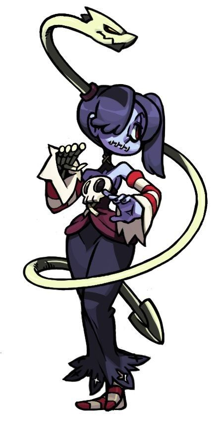
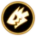

Squigly
Sienna Contiello, más comúnmente conocida como Squigly (En japonés: スクィグリー), es una chica de los no-muertos, mantuvo las gracias sintientes de su familia por su Parásito, Leviathan. Sus padres eran Roberto y Selene, la última fue una Skullgirl anterior.
| Sienna Contiello (Squigly) | |||||||||
|---|---|---|---|---|---|---|---|---|---|
 |
|||||||||
Informacion |
|||||||||
| Icono |  |
| Sexo | Femenino |
| Edad | 28 (14 antes de morir) |
| Cumpleaños | 02 de Noviembre |
| Voz | Víctoria Encalada |
Squigly es una personaje DLC para Skullgirls Encore. A pesar de que se incluyó inicialmente en el roster de personajes de Skullgirls, ella fue reemplazada por Valentine debido a que Lab Zero Games quiso tener un villano jugable durante el lanzamiento del juego.
Debido a que Lab Zero Games alcanzó sus donaciones solicitadas para Squigly, había sido un personaje DLC gratuito para todos al adquirirla por una cantidad limitada de tiempo (los 3 primeros meses después de su lanzamiento), pero desde entonces ha sido añadida a la tienda para la compra.
PersonalidadSquigly es elegante, tranquila y bien educada, pero es seria y decidida a completar su misión. Su experiencia anterior con una Skullgirl le da una perspectiva única y una mayor comprensión de la situación en la mayor parte.
| Sumario |
|---|
Historia
PasadoSquigly es la última miembro "sobreviviente" de la familia Contiello, una famosa familia de cantantes de ópera y los clientes de largo plazo de la familia Medici.
Hace catorce años, la tragedia afectó a la familia de Squigly cuando la Mafia Medici estuvo cerca de obtener el Skull Heart. La asesina superior de Lorenzo, Black Dahlia, recibió la orden de asesinar a Squigly y sus padres por la Mafia, la misma gente que parecían ser algunos de los aliados más cercanos de su familia. Fue durante este incidente que se convirtió en una de los esbirros no-muertos de la Skullgirl. Una vez que la amenaza había sido derrotada, sólo el cuerpo de Squigly fue recuperado, y fue sepultada en un servicio prestado por sí mismo.
Squigly no fue resucitada durante la transformación de la Reina Renoir en una Skullgirl, como la Reina se encontraba actualmente en otra tierra en el momento y sus poderes no se remontan al del Reino Canopy muerto y enterrado.
Un avance rápido hasta el presente: la aparición de Bloody Marie ha despertado a Squigly de su largo sueño. Como parte de la legión de no-muertos de la Skullgirl, Squigly debería haberse convertido en nada más que un sirviente sin sentido de la doncella pálida. Sin embargo, gracias a los poderes de su parásito, Leviathan, ella está a salvo de ese destino.
Después de haber pasado por la familia Contiello por generaciones, Leviathan es refinado y adora a Squigly como su padre y su huésped anterior. Esta historia familiar durante mucho tiempo ha hecho de bonos a Squigly con Leviathan más profundos y más fundamentales que de la mayoría de los parásitos, y permite que trabajen armoniosamente tanto dentro como fuera de la batalla como compañeros de baile sincronizados. Su circunstancia única también parece haberles dado habilidades más allá de este mundo también.
PresenteDespués de despertar en New Meridian, Squigly ve a Marie atacar un dirigible que contiene la huida de Lorenzo Medici con una parte de un edificio. Sus reflexiones sobre el aparente deseo de Marie para proteger a los inocentes transeúntes mientras se centra su furia sobre la Mafia Medici fueron interrumpidos por la llegada de Parasoul y las Garzas Negras, que (algo correctamente) la identificó como una de las secuaces de la Skullgirl. Después de luchar con Parasoul, Squigly huye de la escena, pero no antes de usar una copia de sí misma que aparece para sugerir que la princesa del Reino Canopy centre su atención en Marie y sus esbirros activos.
Después de hacer su escape, Squigly señaló que sus poderes parecían haberse vuelto más fuertes desde la última vez que se usaron, admitió que Leviathan era una señal de su habilidad imperfecta para bloquear la influencia del Skull Heart. Squigly asegurada con su Parásito que estaba haciendo un trabajo admirable con sólo que le permitiera vivir después de la muerte, pero luego descubrió, mucho a su horror, que alguien había cosido su boca cerrada durante su "sueño". Al darse cuenta que los Médicis tenían la culpa, Squigly y Leviathan fueron a buscar a Lorenzo y vengarse por su acción.
FinalDespués de derrotar a la Skullgirl, Double le hace una emboscada a Squigly desde atrás. Afortunadamente, Filia y Samson vienen a rescatarla, evitando su muerte. Después Squigly y Filia deciden trabajar juntas y formar equipo contra Double, Double advierte a Squigly que Filia es una Medici. A pesar de la aversión de Squigly para la Mafia Medici, decide que las acciones de Filia hablarán por ella en su lugar.
Después de la pelea con Double, se revela que Double era la persona que dio a Selene, la madre de Squigly, el Skull Heart, causando el profundo odio repentino entre los Contiellos y los Medicis. Aunque Lorenzo nunca reclamó el Skull Heart, se aseguró que todos los Contiellos fueran "silenciados" (también simbolizado por la boca de Squigly que fue cosida). Después de este descubrimiento, Squigly destruye a Double y el Skull Heart. Después de completar su misión, Squigly vuelve a recaer con Leviathan, los dos de los cuales se habían vuelto inseparables, para despertar con la vuelta de la próxima Skullgirl.
Después de los créditos, una breve escena aparece mostrando a Filia y Samson poniendo flores en la tumba de Squigly y Leviathan, diciendo "Que descansen en paz hasta que nos encontremos de nuevo".
Desarrollo
OrigenSquigly es esencialmente una zombie, a menudo referida como meramente un cadáver, que se anima gracias a la potencia de la Skullgirl. Sin embargo, a diferencia de la mayoría de los no-muertos, siendo huésped de Leviathan le ha permitido conservar sus propios pensamientos y personalidad. Algunos de sus movimientos en el juego incluso hacen referencia a un Jiang Shi, un chino de "salto" zombie/vampiro.
NombreSu nombre completo es Sienna Contiello. Sienna es un nombre italiano procedente de la ciudad de Siena y también se refiere a un pigmento de tierra, uno de los primeros utilizados por los seres humanos en las pinturas rupestres. Contiello es posiblemente una variante del apellido Conti, deriva de la palabra italiana "conte", que significa "conde".
Ella es más comúnmente conocida por su apodo Squigly, que presumiblemente deriva de la palabra "Squiggle" (Garabato en español) y se refiere a la aparición de Leviathan que sale de su cabeza parecida a la de un gusano.
Leviathan y su madre se muestran llamando a Squigly por su apodo, aunque el primero también de vez en cuando se dirige a ella como "milady". A través del juego, la mayoría de los personajes asumen que es una de los esbirros no-muertos de la Skullgirl y se refieren a ella como tal o burlonamente como un "cadáver". Big Band es uno de los pocos que se dirige a ella por su nombre, "Sienna".
Los primeros conceptos muestran que su nombre completo era antes Sienna Quinton Cishan Contiello; Quinton significa "Quinto nacimiento" o "El acuerdo de la reina", mientras que Cishan es probable que derive de la cultura Cishan, una cultura neolítica basada por el Río Amarillo en el norte de China. Este fue probablemente para reflejar un largo linaje con lazos al Dragon Empire y el uso de artes marciales de Squigly, pero desde entonces se han eliminado dos apellidos y antecedentes.
DiseñoLeviathan pasa por la oreja derecha de Squigly y fuera de un agujero en el lado izquierdo de su cabeza. Esto sugiere que el agujero en el lado izquierdo de su cabeza es el agujero de la bala causada por Black Dahlia en el momento del asesinato de Squigly. Esto se contradice sin embargo, en una escena de su Historia representa a Black Dahlia dispararle en lo que parece por el lado derecho de su cabeza, no la izquierda; el orificio en el lado izquierdo sería muy probablemente la herida de salida.
Habilidades y estilo de pelea
Ella y el uso de Leviathan hacen ataques de largo alcance para evitar combate a corta distancia. Sin embargo, sus ataques a mediados de aire son bastante limitados y de corto alcance y tienen que ser acertados. La mayoría de sus ataques terrestres agachada son muy lentos y fáciles de ser vistos y descubiertos a cualquier distancia de la pantalla, pero cada golpe hace daño masivo. Mientras que Filia y Samson han hecho cooperación en los ataques limitados, Squigly y Leviathan sincronizan sus ataques al moverse con fluidez.
Squigly utiliza su voz (con la ayuda de Leviathan) en la batalla, no sólo para tener que centrar la pantalla a ella y arrastrar a sus oponentes hacia ella por su ventaja, también para producir un gran proyectil que se asemeja a una nota musical que hace daño. También puede cargar sus movimientos con posturas para que puedan hacer aun más daño o durar más tiempo. Las posturas se pueden cancelar en diferentes ataques y lanzar a los oponentes con la guardia baja.
Como Filia, Squigly hace muy poco en cualquier lucha, sólo actúa como un vector de Leviathan a arremeter con sus ataques.
Curiosidades
- El movimiento especial de Squigly "The Silver Chord" es una referencia a un ataque de Scorpion de la saga Mortal Kombat, ya que ella y Leviathan dicen "¡Ven aquí!" así como Leviathan de vez en cuando grita "¡Ven aquí!" durante la ejecución del movimiento.
- El movimiento especial de Squigly "Draugen Punch" es una referencia al Shoryuken, un movimiento especial procedente de la saga Street Fighter utilizado por Ryu, Ken, y otros combatientes en la saga con el Ansatsuken (o Shotokan, como comúnmente se le llama) en el estilo de lucha.
- No sólo es "Draugen Punch" un juego de palabras, pero la palabra "Draugen" es un tipo de no-muertos de la mitología nórdica.